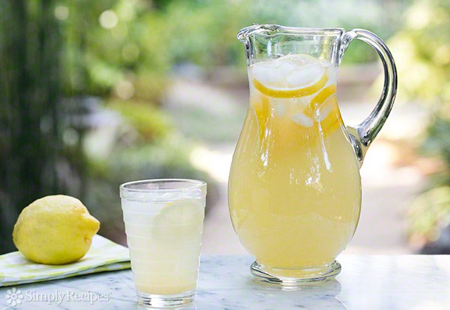
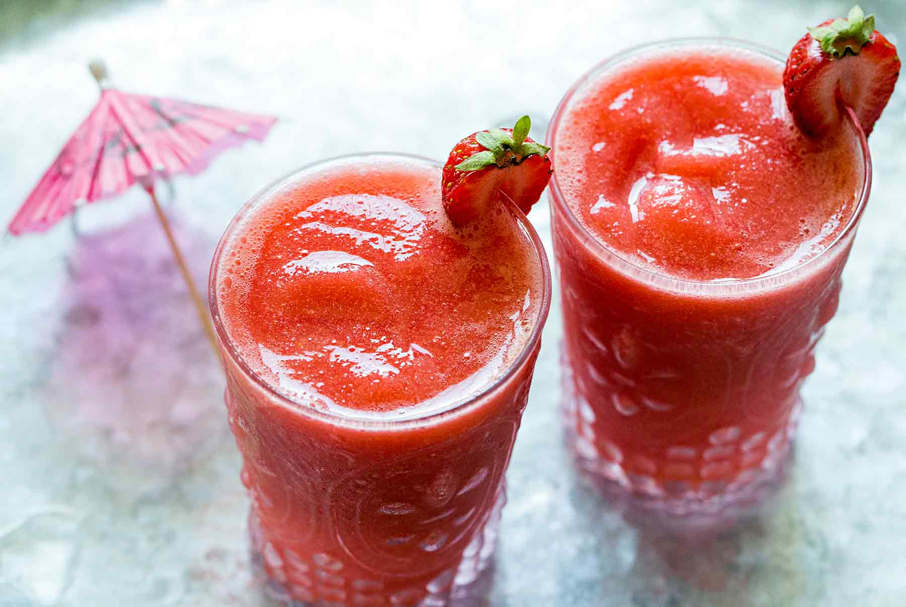
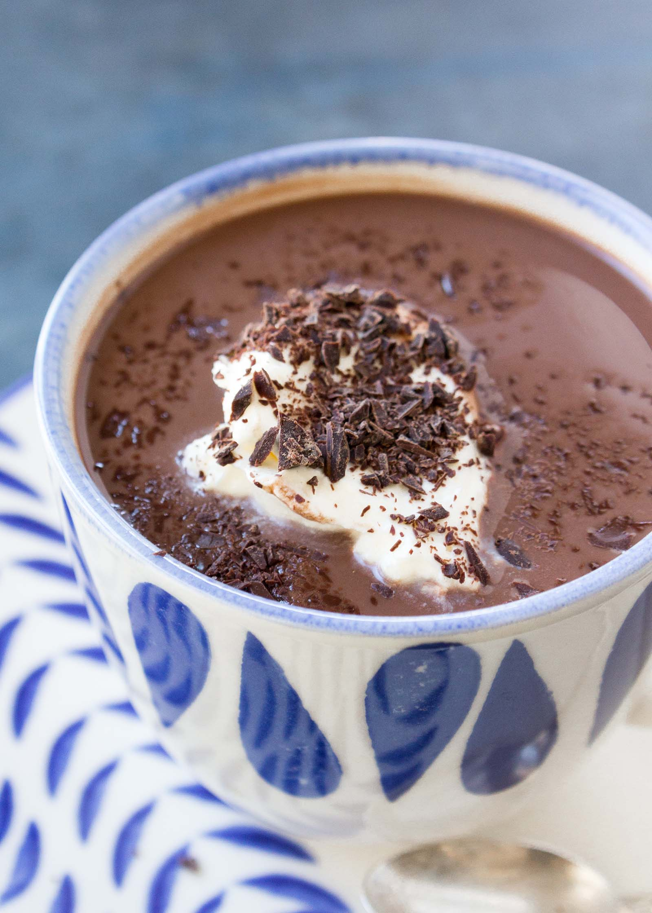

Perfect Lemonade Recipe
Prep time: 10 minutes Yield: Serves 6

For more intense lemon flavor, grate the zest from one fresh lemon and add the zest to the simple syrup as you are making it. Once the sugar has dissolved in the water remove from heat and let the zest seep in the simple syrup for several minutes, then strain out the zest when you add the simple syrup to the lemon juice.
INGREDIENTS
- 1 cup white, granulated sugar (can reduce to 3/4 cup)
- 1 cup water (for the simple syrup)
- 1 cup lemon juice
- 2 to 3 cups cold water (to dilute)
METHOD
- First make a "simple syrup". Place the sugar and water in a small saucepan and bring to a simmer. Stir so that the sugar dissolves completely and remove from heat.
- While the water is heating for the simple syrup, juice your lemons. Depending on the size of the lemons, 4 to 6 of them should be enough for one cup of juice.
- Pour the juice and the simple syrup sugar water into a serving pitcher. Add 2 to 3 cups of cold water and taste. Add more water if you would like it to be more diluted (though note that when you add ice, it will melt and naturally dilute the lemonade). If the lemonade is a little sweet for your taste, add a little more straight lemon juice to it.
Refrigerate 30 to 40 minutes.
Serve with ice, sliced lemons.
Frozen Strawberry Daiquiri Recipe
Prep time: 5 minutes Yield: 6 to 8 cocktails

You can buy prepared simple syrup for this recipe, or make it yourself! Combine equal parts sugar and water in a small saucepan over medium heat (1/2 cup of each will make a good amount). Bring to a simmer and stir until the sugar is dissolved. Cool and refrigerate; it will keep for several weeks.
INGREDIENTS
- 1 1/2 cups white rum
- 1/2 to 3/4 cup fresh-squeezed lime juice, from about 6 juicy limes
- 1/4 to 1/3 cup simple syrup, depending on your preferred sweetness
- 1 16-ounce package frozen strawberries
- 4 cups ice cubes
- Strawberries, lime wheels, or little umbrellas for garnish (optional)
Special equipment:
METHOD
- Place the rum, 1/2 cup of the lime juice, 1/4 cup of the simple syrup, strawberries, and ice cubes into a blender and pulse until completely blended with a slushy consistency.
- Check the consistency and flavor. Add more lime juice for more tartness or more simple syrup to sweeten, if needed. You may also want more ice to make it slushier in consistency. A daiquiri is not an exact science, so adjust as you see fit.
- Divide the daiquiris between glasses. Garnish and serve.
Paleo Hot Cocoa Recipe
Prep time: 10 minutes Cook time: 5 minutes
Yield: About 1 cup chocolate syrup, enough for 6 to 8 cups of cocoa

INGREDIENTS
For the chocolate syrup:
- 1/3 cup water
- 1/3 cup unsweetened cocoa powder
- Pinch of salt
- 1/2 cup maple syrup
- 1 tablespoon vanilla
- 1/2 tablespoon espresso powder (optional)
To serve:
- 1 cup milk per person (like coconut milk, almond milk, dairy milk, or other favorite milk)
- Sweetener of your choice, like maple syrup or honey (optional)
- Coconut whipped cream (optional)
- Dark chocolate shavings (optional)
METHOD
- Bring the water to a boil in the microwave or on the stovetop.
- Make the cocoa syrup: Place the cocoa powder and salt in a heat-proof bowl and pour the boiling water over top. Whisk until combined. Let sit five minutes. Add the maple syrup, vanilla, and espresso powder. Stir to combine. The syrup is ready to use immediately, or let it cool completely, then transfer to an airtight container and refrigerate. This chocolate syrup will last in the fridge for several weeks.
- Make the cocoa: Warm the milk (1 cup or so per person) in the microwave or on the stovetop. Transfer to a mug and stir in 2 tablespoons of syrup per cup. Taste and add additional syrup or sweetener if desired.